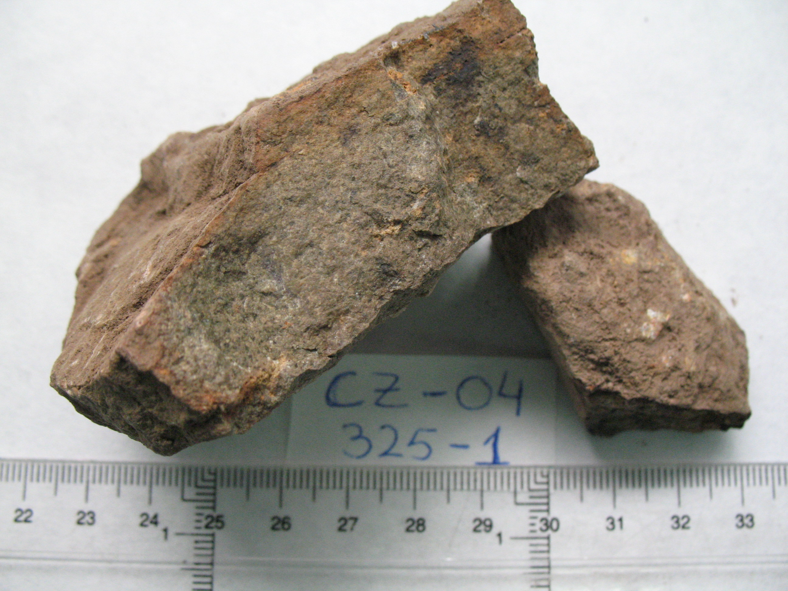
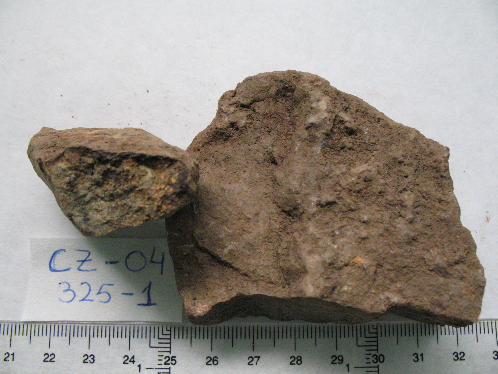
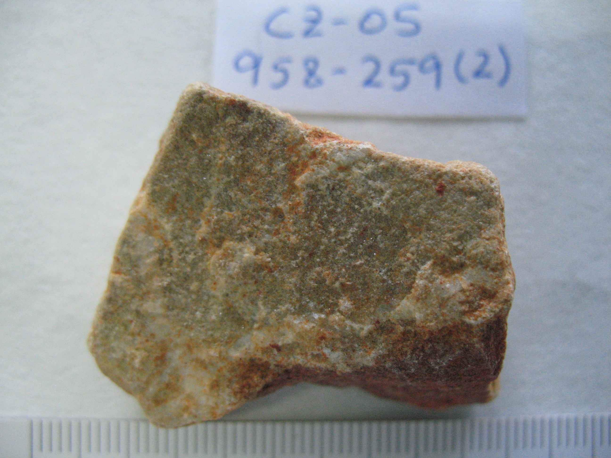
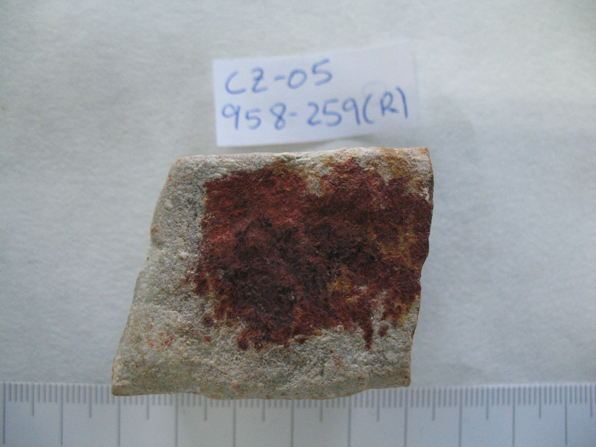

HCl 20%:
CZ-01. Cuarcita blanca con vetas ferruginosas
|
Colores: | Blanco lechoso | Color: - Blanco lechoso: 10YR8/2, Marrón muy pálido | ||
| Color raya: | Sin raya | ||||
| Grano: | No apreciable | ||||
| Dureza: | Vidrio | ||||
| Friabilidad : | No friable | ||||
| Forma: | Angular | ||||
| Exfoliación: | No exfoliable | ||||
| Esquistosidad: | No apreciable | ||||
| Tacto: | Punzante-anguloso | ||||
| Densidad: | 2,72 g/ml | ||||
|
HCl 20%: |
No |
| Observaciones: Representa aproximadamente un 40% de los gruesos del horizonte. Muestras guardadas: 959-171 |
|
GL |
Frecuencia |
Litolofacies: |
| 3300 | 12 | Conglomerados, gravas y arenas con ostreas y calizas bioclasticas arenosas |
| 3160 | 5 | Conglomerados, arenas y limos |
| 3170 | 5 | Conglomerados, arenas y limos |
| 100 | 4 | Granodiorita localmente granito |
| 1340 | 4 | Pizarras, areniscas y cuarcitas con tufitas locales |
| 1140 | 4 | Pizarras con algunas grauwacas con Posidonomyas |
| 3200 | 4 | Limos arenoso-calcareos amarillentos |
| 2140 | 3 | Filitas y metaarenitas |
| 2500 | 3 | Ortoanfibolitas toleiticas de grano grueso |
| 1570 | 3 | Lavas, brechas, tobas y tufitas ácidas cuarzoqueratofidicas |
| 1140 | 3 | Pizarras y algunas grauwacas con Posidonomyas, Goniatites y Archaeocalamites |
| 1340 | 3 | Pizarras, areniscas y cuarcitas |
| 1580 | 2 | Aglomerados, lavas y tobas esquistosas ácidas e intermedias |
| 100 | 2 | Cuarzodioritas localmente dioritas |
| 1860 | 2 | Diabasas y facies de contacto |
| 2150 | 2 | Filitas con intercalaciones de cuarcitas micáceas |
| 8400 | 2 | Jaspes con manganeso y "cherts" |
| 1590 | 2 | Lavas, aglomerados, brechas, tobas y tufitas ácidas |
| 1150 | 2 | Pizarras y grauwacas |
| 2050 | 2 | Pizarras, tufitas y tobas |
| 1580 | 1 | Brechas, aglomerados, lavas, tobas y tufitas ácidas e intermedias (localmente básicas) |
| 1570 | 1 | Brechas, aglomerados, lavas, tobas y tufitas ácidas e intermedias (localmente básicas) |
| 1840 | 1 | Diabasas y facies de contacto |
| 2160 | 1 | Filitas y cuarzofilitas con intercalaciones cuarcíticas |
| 2300 | 1 | Ortoanfibolitas toleíticas (esquistos verdes) |
| 1150 | 1 | Pizarras y grauwacas con Posidonomyas, Goniatites y Archaeocalamites |
| 2040 | 1 | Pizarras, tufitas y tobas |
|
Litofacies secundarias: |
||
| 1340 | 31 | Pizarras, grauwacas y cuarcitas |
| 740 | 24 | Lavas básicas (espilítas y diabasas espilitizadas) y tobas básicas esquistosas |
| 100 | 16 | Granitos y granodioritas |
| 1340 | 15 | Pizarras, areniscas y cuarcitas |
| 2050 | 12 | Pizarras y tufitas |
| 2140 | 10 | Filitas con intercalaciones de cuarcitas micáceas |
| 1570 | 9 | Tobas acidas esquistosas y mineral |
| 1840 | 8 | Gabro - diabasas |
| 1340 | 7 | Pizarras, cuarcitas, areniscas y cuarzowacas con nódulos y capas finas de hierro y manganeso |
| 2060 | 7 | Tobas, tufitas y pizarras |
| 2140 | 6 | Filitas y metaarenitas |
| 1570 | 6 | Lavas SC |
| 1570 | 6 | Lavas, aglomerados, brechas, tobas y tufitas ácidas |
| 2300 | 6 | Ortoanfibolitas toleíticas (esquistos verdes) |
| 1350 | 6 | Pizarras, areniscas y cuarcitas |
| 2050 | 6 | Pizarras, tufitas y tobas |
| 1570 | 5 | Brechas, aglomerados, lavas, tobas y tufitas ácidas e intermedias (localmente básicas) |
| 2140 | 5 | Filitas, cuarcitas y grauwacas |
| 1240 | 5 | Grauwacas y pizarras con Posidonomyas, Goniatites y Archaeocalamites |
| 2500 | 5 | Ortoanfibolitas toleíticas de grano grueso |
| 1150 | 5 | Pizarras y grauwacas |
| 1150 | 5 | Pizarras y grauwacas con Posidonomyas, Goniatites y Archaeocalamites |
| 2200 | 5 | Rocas de silicatos cálcicos |
| 750 | 5 | Tobas verde - violetas SC |
| 1580 | 4 | Aglomerados, lavas y tobas esquistosas ácidas e intermedias |
| 1840 | 4 | Diabasas y facies de contacto |
| 2400 | 4 | Gneises cuarzo-feldespáticos con biotita |
| 1570 | 4 | Lavas, brechas, tobas y tufitas ácidas cuarzoqueratofidicas |
| 1340 | 4 | Pizarras, areniscas y cuarcitas con tufitas locales |
| 750 | 4 | Tobas básicas esquistosas "Tobas verde - violetas" |
| 1570 | 3 | Aglomerados y brechas acidas. Aglomerados |
| 1570 | 3 | Aglomerados, lavas y tobas esquistosas ácidas e intermedias |
| 3160 | 3 | Conglomerados, arenas y limos |
| 100 | 3 | Cuarzodioritas y tonalitas |
| 2140 | 3 | Filitas y cuarzofilitas con intercalaciones cuarcíticas |
| 2160 | 3 | Filitas y cuarzofilitas con intercalaciones cuarciticas |
| 1590 | 3 | Lavas, aglomerados, brechas, tobas y tufitas ácidas |
| 1140 | 3 | Pizarras y algunas grauwacas con Posidonomyas, Goniatites y Archaeocalamites |
| 1150 | 3 | Pizarras y algunas grauwacas con Posidonomyas, Goniatites y Archaeocalamites |
| 1580 | 3 | Tobas, brechas, lavas y tufitas ácidas |
| 1580 | 2 | Brechas, aglomerados, lavas, tobas y tufitas ácidas e intermedias (localmente básicas) |
| 100 | 2 | Cuarzodioritas localmente dioritas |
| 2140 | 2 | Esquistos y areniscas |
| 1250 | 2 | Grauwacas y pizarras con Posidonomyas, Goniatites y Archaeocalamites |
| 740 | 2 | Lavas y tobas básicas espilíticas |
| 840 | 2 | Metamorfismo de contacto sobre Grauwacas y pizarras |
| 440 | 2 | Nivel guia de cineritas violetas y verdes ("pizarras moradas") |
| 440 | 2 | Pizarras vinosas y tufitas |
| 100 | 1 | Cuarzodioritas (tipo tonalita) |
| 2150 | 1 | Filitas con intercalaciones de cuarcitas micáceas |
| 300 | 1 | Gabros |
| 300 | 1 | Gabros, gabros anfibolicos con piroxeno, gabros anfibolicos |
| 1150 | 1 | Grauwacas y pizarras con Posidonomyas, Goniatites y Archaeocalamites |
| 1580 | 1 | Lavas, aglomerados, brechas, tobas y tufitas ácidas |
| 1580 | 1 | Lavas, aglomerados, brechas, tobas y tufitas ácidas, a veces abigarradas |
| 1570 | 1 | Lavas, aglomerados, brechas, tobas y tufitas ácidas, a veces abigarradas |
| 4100 | 1 | Mármoles con diópsido y/o forsterita |
| 2300 | 1 | Ortoanfibolitas toleíticas de grano fino |
| 1140 | 1 | Pizarras basales con Posidonomyas, Goniatites y Archaeocalamites |
| 1150 | 1 | Pizarras basales con Posidonomyas, Goniatites y Archaeocalamites |
| 1340 | 1 | Pizarras y limolitas |
| 100 | 1 | Pórfidos graniticos |
| 1570 | 1 | Tobas, brechas, lavas y tufitas ácidas |
| 2050 | 1 | Tobas, tufitas y pizarras |
CZ-02. Cuarcita oscura
|
|
Colores: | Pardo rojizo | Color: - Pardo rojizo: 5YR5/2, Gris rojizo | ||
| Color raya: | Blanca, pero es difícil de rayar | ||||
| Grano: | Muy fino | ||||
| Dureza: | Vidrio | ||||
| Friabilidad : | No friable | ||||
| Forma: | Subangular | ||||
| Exfoliación: | No exfoliable | ||||
| Esquistosidad: | No apreciable | ||||
| Tacto: | Granular fino | ||||
| Densidad: | 2,63 g/ml | ||||
|
HCl 20%: |
No |
| Observaciones: Son rocas cuarzosas que aparecen en superficie de suelos sobre otras litologías en las que se cree que aparecen como impurezas. Muestras guardadas: 959-170 (1) |
|
GL |
Frecuencia |
Litolofacies: |
| 1340 | 5 | Pizarras, grauwacas y cuarcitas |
| 1340 | 2 | Pizarras, areniscas y cuarcitas |
| 1340 | 2 | Pizarras, areniscas y cuarcitas con tufitas locales |
| 1570 | 1 | Aglomerados y brechas ácidas. Aglomerados |
| 3160 | 1 | Conglomerados, arenas y limos |
| 2300 | 1 | Ortoanfibolitas toleíticas (esquistos verdes) |
| 450 | 1 | Pizarras, tufitas y tobas finas de tonos vinosos |
| 1570 | 1 | Tobas ácidas esquistosas y mineral |
|
Litofacies secundarias: |
||
| 1340 | 9 | Pizarras, grauwacas y cuarcitas |
| 2060 | 5 | Tobas, tufitas y pizarras |
| 1340 | 4 | Pizarras, areniscas y cuarcitas |
| 1570 | 3 | Aglomerados y brechas ácidas. Aglomerados |
| 100 | 3 | Granitos y granodioritas |
| 3170 | 2 | Conglomerados, arenas y limos |
| 2140 | 2 | Filitas y metaarenitas |
| 8400 | 2 | Jaspes con manganeso y "cherts" |
| 1150 | 2 | Pizarras y algunas grauwacas con Posidonomyas, Goniatites y Archaeocalamites |
| 1580 | 1 | Aglomerados, lavas y tobas esquistosas ácidas e intermedias |
| 1570 | 1 | Aglomerados, lavas y tobas esquistosas acidas e intermedias |
| 3160 | 1 | Conglomerados, arenas y limos |
| 3300 | 1 | Conglomerados, gravas y arenas con ostreas y calizas bioclásticas arenosas |
| 2150 | 1 | Filitas con intercalaciones de cuarcitas micáceas |
| 2140 | 1 | Filitas, cuarcitas y grauwacas |
| 1840 | 1 | Gabro - diabasas |
| 100 | 1 | Granitos, leucogranitos, granitos granofidicos y porfidicos |
| 740 | 1 | Lavas básicas (espilitas y diabasas espilitizadas) y tobas basicas esquistosas |
| 1570 | 1 | Lavas SC |
| 740 | 1 | Lavas y tobas básicas espilíticas |
| 1570 | 1 | Lavas, aglomerados, brechas, tobas y tufitas ácidas |
| 1580 | 1 | Lavas, aglomerados, brechas, tobas y tufitas ácidas |
| 1590 | 1 | Lavas, aglomerados, brechas, tobas y tufitas ácidas |
| 3200 | 1 | Limos arenoso-calcáreos amarillentos |
| 2300 | 1 | Ortoanfibolitas toleíticas (esquistos verdes) |
| 1140 | 1 | Pizarras y algunas grauwacas con Posidonomyas, Goniatites y Archaeocalamites |
| 1150 | 1 | Pizarras y grauwacas |
| 1150 | 1 | Pizarras y grauwacas con Posidonomyas, Goniatites y Archaeocalamites |
| 2050 | 1 | Pizarras y tufitas |
CZ-03. Cuarzo arenisca
|
|
Colores: | Oliva pardo claro; exterior rojo parduzco | Color: |
- Oliva pardo claro: 2.5Y7/3, Amarillo pálido - Rojo parduzco, exterior: 5YR5/2, Gris rojizo |
||
| Color raya: | Blanco grisáceo | |||||
| Grano: | Fino | |||||
| Dureza: | Navaja + |
|
||||
| Friabilidad : | Escasa | |||||
| Forma: | Angular | |||||
| Exfoliación: | No exfoliable | |||||
| Esquistosidad: | Poco apreciable | |||||
| Tacto: | Granular fino | |||||
| Densidad: | 2,268 g/ml | |||||
|
HCl 20%: |
No | |||||
| Observaciones: Arenisca que aparece en superficie de brechas-tobas-tufitas. Puede ser importante como indicadora. Muestras guardadas: 959-101 (1), 959-93 (1) |
|
GL |
Frecuencia |
Litolofacies: |
| 2050 | 13 | Pizarras y tufitas |
| 1340 | 5 | Pizarras, cuarcitas, areniscas y cuarzowacas con nódulos y capas finas de hierro y manganeso |
| 1340 | 2 | Pizarras, areniscas y cuarcitas con tufitas locales |
| 1570 | 1 | Lavas, aglomerados, brechas, tobas y tufitas ácidas, a veces abigarradas |
| 1580 | 1 | Tobas, brechas, lavas y tufitas ácidas |
|
Litofacies secundarias: |
||
| 1570 | 2 | Brechas, aglomerados, lavas, tobas y tufitas ácidas e intermedias (localmente básicas) |
| 1570 | 2 | Lavas, brechas, tobas y tufitas ácidas cuarzoqueratofidicas |
| 2050 | 2 | Pizarras y tufitas |
| 1580 | 1 | Brechas, aglomerados, lavas, tobas y tufitas ácidas e intermedias (localmente básicas) |
| 1840 | 1 | Diabasas y facies de contacto |
| 2160 | 1 | Filitas y cuarzofilitas con intercalaciones cuarcíticas |
| 1580 | 1 | Lavas, aglomerados, brechas, tobas y tufitas ácidas, a veces abigarradas |
| 2300 | 1 | Ortoanfibolitas toleíticas (esquistos verdes) |
| 1140 | 1 | Pizarras y algunas grauwacas con Posidonomyas, Goniatites y Archaeocalamites |
| 1140 | 1 | Pizarras y grauwacas con Posidonomyas, Goniatites y Archaeocalamites |
| 1340 | 1 | Pizarras, areniscas y cuarcitas |
| 1580 | 1 | Tobas, brechas, lavas y tufitas ácidas |
CZ-04. Cuarcita verde
|
 |
Colores: | Gris verdoso | Color:
-
Gris verdoso: 2.5Y5/2, Marrón grisáceo

|
||
| Color raya: | No raya | ||||
| Grano: | Fino | ||||
| Dureza: | Vidrio | ||||
| Friabilidad : | No friable | ||||
| Forma: | Angular | ||||
| Exfoliación: | No exfoliable | ||||
| Esquistosidad: | Poco apreciable | ||||
| Tacto: | Áspero (no granular) | ||||
| Densidad: | 3,174 g/ml | ||||
|
HCl 20%: |
No |
| Observaciones: La densidad varía entre 3,033 y 3,2627 g/ml. Con abundantes granos oscuros de mineral ferromagnesiano. Acompaña a jaspes y a VS-28. Muestras guardadas: 325-1 (IFC) |
|
GL |
Frecuencia |
Litolofacies: |
|
Litofacies secundarias: |
CZ-05. Cuarzoarenisca de grano muy fino
|
 |
Colores: | Pardo grisáceo. Rojo vinoso. Tinciones pardo rojizo oscuro | Color: |
- Pardo grisáceo: 2.5YR7/1, Gris rojizo claro - Rojo vinoso: 2.5YR5/3, Marrón rojizo - Tinciones pardo rojizo oscuro: 2.5YR4/6, Rojo |
||
| Color raya: | Blanco (sin raya) | |||||
| Grano: | Muy fino | |||||
| Dureza: | Vidrio |
 |
||||
| Friabilidad : | No friable | |||||
| Forma: | Subangular | |||||
| Exfoliación: | No exfoliable | |||||
| Esquistosidad: | No apreciable | |||||
| Tacto: | Áspero (no granular) | |||||
| Densidad: | 2,472 g/ml | |||||
|
HCl 20%: |
No | |||||
| Observaciones: Observaciones: Roca de aspecto muy cúbico (rompe en ángulos rectos). Grano de cuarzo muy fino, pero apreciable (a diferencia de cuarcita). Muestras guardadas: 958-259 (2 y R) |
|
GL |
Frecuencia |
Litolofacies: |
| 1350 | 9 | Pizarras, areniscas y cuarcitas |
| 100 | 2 | Cuarzodioritas y tonalitas |
| 2060 | 1 | Tobas, tufitas y pizarras |
|
Litofacies secundarias: |
||
| 840 | 3 | Metamorfismo de contacto sobre Grauwacas y pizarras |
| 100 | 2 | Cuarzodioritas y tonalitas |
| 2140 | 1 | Filitas, cuarcitas y grauwacas |

.JPG)
.JPG)